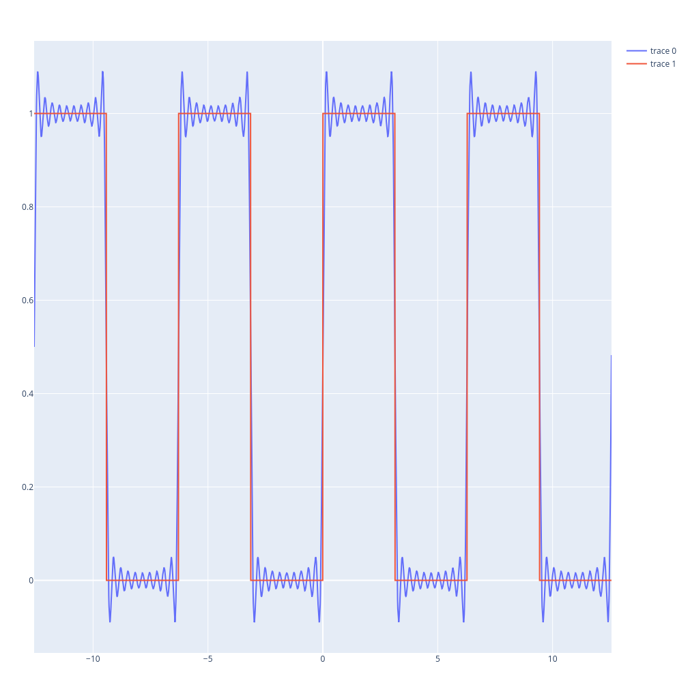
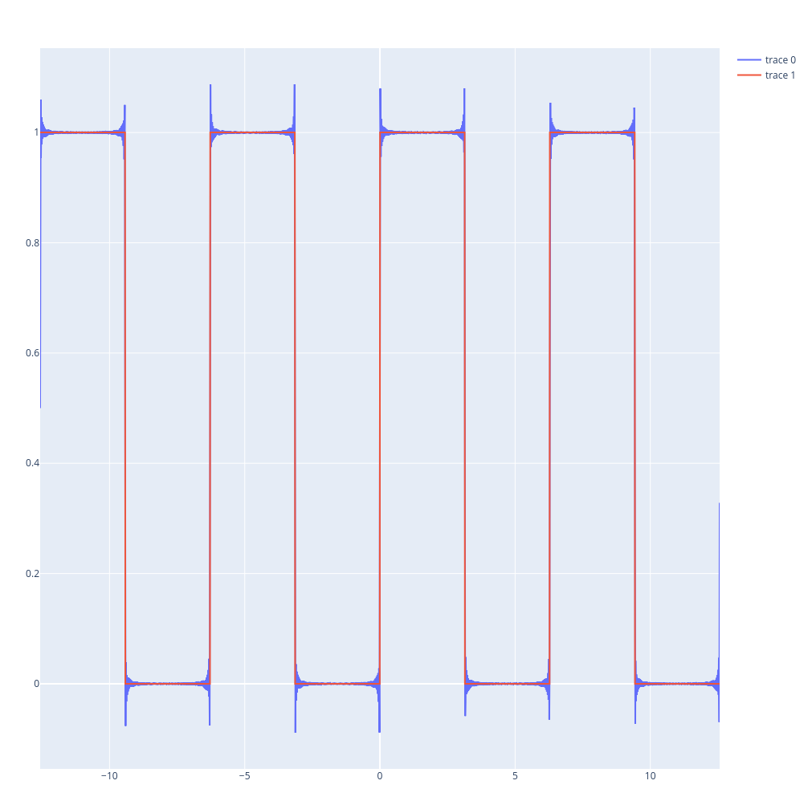

Fourier Series, An Example
Table of Contents
Plot de uma série de Fourier
Função à descrever
\begin \begin f(x) = \begin 1, \quad 0\leq\text<\pi\\ 0, \quad -\pi\leq\text<0\\ \end\\ \text=2\pi \end \end
Solução analítica
Usando,
$$\begin \begin f(x) = \dfrac{1}{2}a_0 + \sum_^\infty \left[a_n \cos(\dfrac{n \pi x}) + b_n \sin(\dfrac{n \pi x})\right] \end \end$$
Chegamos em,
\begin \begin \begin a_0 &= 1\\ a_n &= 0, \quad \forall n \in \mathbb\\ b_k &= \dfrac{2}{(2k-1)\pi} \end \end \end
O que significa que
$$\begin \begin f(x) = \frac{1}{2} + \sum_^{\infty}{\left(\dfrac{2}{(2k-1)\pi}\sin{((2k-1)x)}\right)} \end \end$$
Implementação em Julia
A função aproximação da série de Fourier
function f(x,N)
g = 1/2
for k in 1:1:N
g += (2/((2*k -1)*π))*sin((2*k-1)*x)
end
return g
end
Mapeamos os valores para o intervalo que queremos estimar a função periódica
values = map(x -> f.(-4*π:0.01:4*π,x), 1:1:100)
Por fim, definimos a função real, a qual queremos aproximar
function f_actual(x)
if abs(x)<π
if 0<=x<π
return 1
elseif -π<=x<0
return 0
end
else
y = (x/2π -floor(x/2π))*2π
if π<=y<2π
return 0
elseif 0<=y<π
return 1
end
end
end
Gerando os valores literais
values_actual = f_actual.(-4*π:0.01:4*π)
Plot
Usaremos a biblioteca PlotlyJS.jl, para gerarmos um gráfico de alta qualidade,
trace = PlotlyJS.scatter(;x=xs, y=values[10])
trace2 = PlotlyJS.scatter(;x=xs, y=values[100])
trace3 = PlotlyJS.scatter(;x=xs, y=values_actual)
PlotlyJS.plot([trace,trace3])
Fourier com 10 termos de aproximação 
{kind=link}
PlotlyJS.plot([trace2,trace3])
\Fourier com 100 termos de aproximação 
{kind=link}